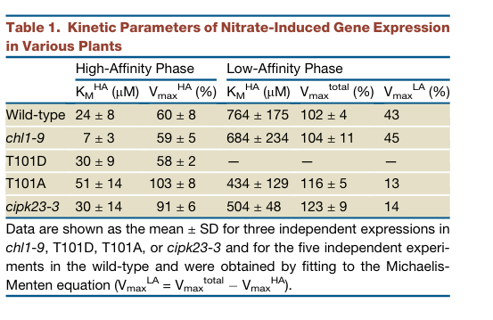

NRT1.1 (NPF6.3/CHL1; AT1G12110) is a plasma-membrane nitrate transporter and nitrate sensor. Proton-coupled nitrate uptake operates over low- and high-affinity regimes regulated by Thr101 phosphorylation, oligomerization and membrane trafficking. Nitrate sensing can be separated genetically from uptake. NPF6.3 also facilitates cellular auxin uptake, particularly under low nitrate, contributing to basipetal auxin movement away from lateral-root tips and restraining their outgrowth. Its nitrate transport and signaling roles influence root-system architecture, guard-cell opening and water loss, nitrate allocation during cadmium stress, and nutrient-dependent flowering responses.
Definition: A signaling process initiated by nitrate perception that changes cellular activity, including nitrate-responsive transcription. The perception and response are distinguished from nitrate uptake and assimilation.
Justification: Retains the earlier review's ontology question with direct uptake/sensing-separation evidence from PMID:19766570. It does not assert that every nitrate-response mechanism follows one obligatory CBL/CIPK chain.
Parent term: response to nitrate
Supporting Evidence:
Definition: Detecting nitrate and converting its recognition into a change that initiates a cellular signaling response, distinguishable from nitrate transmembrane transport.
Justification: The older CHL1 review identified this separate core activity without a molecular-function slot. Uptake/sensing-decoupled mutants directly support the role; the current QuickGO search did not establish a nitrate-specific sensor MF. Use an explicit proposed activity rather than an unrelated transport term.
Supporting Evidence:
| GO Term | Evidence | Action | Reason |
|---|---|---|---|
|
GO:0005515
protein binding
|
IPI
PMID:19766570 CHL1 functions as a nitrate sensor in plants. |
MODIFY |
Summary: NPF6.3 binds its regulatory protein kinase CIPK23.
Reason: The cited interaction and biochemical phosphorylation identify the partner as a protein kinase, supporting protein kinase binding. This does not assign kinase catalysis to the transporter or infer an independent signaling enzyme activity.
Proposed replacements:
protein kinase binding
Supporting Evidence:
file:ARATH/NRT1.1/NRT1.1-uniprot.txt
Interacts with CIPK23.
PMID:19766570
protein kinase CIPK23 can phosphorylate T101 of CHL1 to maintain a low-level primary response.
|
|
GO:0005515
protein binding
|
IPI
PMID:31431511 Phosphorylation-Mediated Dynamics of Nitrate Transceptor NRT... |
REMOVE |
Summary: NRT1.1 phosphorylation-dependent proximity to AtREM1.3 is measured, but bare protein binding is uninformative.
Reason: Figure 3 uses FRET-FLIM of fluorescent phosphovariants and remorin in lateral-root cells to assess membrane-microdomain partitioning. Preserve that physical-association evidence; it does not by itself establish remorin as a catalytic cofactor or justify inventing a specific regulatory binding function. Remove only the generic GO:0005515 claim under the project binding policy.
Supporting Evidence:
PMID:31431511
In plants coexpressing T101D-GFP with AtRem1.3-mCherry, fluorescence lifetime sharply decreased and the FRET efficiency (τ) increased to 38.7% upon LN treatment and to 18.2% upon HN treatment
|
|
GO:0005886
plasma membrane
|
IDA
PMID:31431511 Phosphorylation-Mediated Dynamics of Nitrate Transceptor NRT... |
ACCEPT |
Summary: NPF6.3 occupies the plasma membrane and undergoes regulated internalization.
Reason: Native Arabidopsis lateral-root imaging and phosphovariant trafficking experiments directly support plasma-membrane localization. Endosomal signaling after internalization is compatible with this location and does not displace it.
Supporting Evidence:
PMID:31431511
nonphosphorylatable NRT1.1T101A showed low lateral mobility and oligomerized at the plasma membrane (PM)
|
|
GO:0006857
oligopeptide transport
|
IEA
GO_REF:0000002 |
REMOVE |
Summary: The oligopeptide-family mapping incorrectly assigns peptide transport to nitrate-specialized NPF6.3.
Reason: IPR018456 identifies a broader transporter lineage with diversified substrates. Direct target binding experiments reject Ala-Ala, and comparison of the nitrate-bound structure with peptide transporters identifies altered substrate-recognition chemistry. The source explicitly explains why AtNRT1.1 cannot recognize or transport peptides; this is target evidence against the propagated substrate, not inference from the NPF family name.
Supporting Evidence:
PMID:24572366
AtNRT1.1 specifically recognizes both nitrate and chlorate
PMID:24572366
does not recognize nitrite, alanine, sulphate, phosphate or the di-peptide Ala-Ala
|
|
GO:0006950
response to stress
|
IEA
GO_REF:0000117 |
MODIFY |
Summary: NPF6.3 affects water loss through guard-cell nitrate transport and participates in cadmium-stress nitrate allocation.
Reason: The generic electronic stress term can be refined to the experimentally supported water-deprivation response and cadmium-ion response. These are context-specific physiological roles, not evidence that NPF6.3 directly transports cadmium or is a universal stress-protection factor.
Proposed replacements:
response to water deprivation
response to cadmium ion
Supporting Evidence:
PMID:12509525
chl1 mutants had reduced stomatal opening and reduced transpiration rates in the light or when deprived of CO(2) in the dark.
PMID:30972097
NRT1.1 and NRG2 regulated Cd2+ stress-induced NO3 - allocation to roots
|
|
GO:0009414
response to water deprivation
|
IMP
PMID:12509525 The nitrate transporter AtNRT1.1 (CHL1) functions in stomata... |
KEEP AS NON CORE |
Summary: Guard-cell nitrate uptake links NPF6.3 to drought susceptibility.
Reason: The mutant has less nitrate-dependent stomatal opening and transpiration and consequently greater drought tolerance. Retain a water-deprivation role without reversing the phenotype into a claim that NPF6.3 promotes drought resistance.
Supporting Evidence:
PMID:12509525
chl1 mutants had reduced stomatal opening and reduced transpiration rates in the light or when deprived of CO(2) in the dark.
|
|
GO:0010167
response to nitrate
|
IBA
GO_REF:0000033 |
ACCEPT |
Summary: NPF6.3 contributes directly to nitrate sensing and nitrate-responsive root development.
Reason: Nitrate-dependent responses are supported by uptake/sensing separation and nitrate-patch root-colonization experiments. The PAINT ancestral response assignment at PTN000183463 is consistent with this direct target biology; target self-grounding in the source set is legitimate.
Supporting Evidence:
PMID:19766570
analysis of an uptake- and sensing-decoupled mutant showed that the nitrate transporter CHL1 functions as a nitrate sensor.
PMID:17148611
NRT1.1 promotes localized root proliferation independently of any nutritional effect
|
|
GO:0010167
response to nitrate
|
IMP
PMID:17148611 The Arabidopsis NRT1.1 transporter participates in the signa... |
ACCEPT |
Summary: NPF6.3 contributes directly to nitrate sensing and nitrate-responsive root development.
Reason: Nitrate-dependent responses are supported by uptake/sensing separation and nitrate-patch root-colonization experiments. The PAINT ancestral response assignment at PTN000183463 is consistent with this direct target biology; target self-grounding in the source set is legitimate.
Supporting Evidence:
PMID:19766570
analysis of an uptake- and sensing-decoupled mutant showed that the nitrate transporter CHL1 functions as a nitrate sensor.
PMID:17148611
NRT1.1 promotes localized root proliferation independently of any nutritional effect
|
|
GO:0010540
basipetal auxin transport
|
IMP
PMID:31431511 Phosphorylation-Mediated Dynamics of Nitrate Transceptor NRT... |
ACCEPT |
Summary: NPF6.3 contributes to basipetal auxin movement from lateral-root tips under low nitrate.
Reason: NRT1.1 performs auxin transport rather than merely causing a downstream developmental phenotype. Full PMID:31431511 Figure 1 measures yeast IAA influx and lateral-root basipetal tracer movement in phosphovariants; PMID:20627075 independently reports nitrate-inhibited cellular auxin uptake. Retain basipetal auxin transport as a core, nitrate-conditioned carrier contribution. This does not convert tissue-level movement out of the root tip into cellular auxin efflux.
Supporting Evidence:
PMID:20627075
NRT1.1 not only transports nitrate but also facilitates uptake of the phytohormone auxin.
PMID:31431511
These actions could facilitate NRT1.1-dependent auxin flux, thus depleting auxin levels in LRP and inhibiting their outgrowth.
PMID:31431511
Basipetal [3H]IAA uptake (counts per minute) in LRs of wild-type, T101A, and T101D seedlings grown for 10 d on medium containing 0.2 and 1 mm of NO3–.
|
|
GO:0015112
nitrate transmembrane transporter activity
|
IBA
GO_REF:0000033 |
ACCEPT |
Summary: NPF6.3 catalyzes proton-coupled nitrate uptake over regulated affinity regimes.
Reason: Direct oocyte currents and uptake, native mutant uptake defects, and nitrate-bound structures establish nitrate transmembrane transport. PTN000183463 appropriately propagates this experimentally grounded target function; affinity regulation does not require a different substrate-class annotation.
Supporting Evidence:
PMID:8453665
Injection of CHL1 mRNA into Xenopus oocytes produces a nitrate- and pH-dependent membrane depolarization, inward current, and nitrate uptake.
PMID:24572366
we present both the apo and nitrate-bound crystal structures of Arabidopsis thaliana NRT1.1
|
|
GO:0015112
nitrate transmembrane transporter activity
|
IMP
PMID:9844028 The Arabidopsis CHL1 protein plays a major role in high-affi... |
ACCEPT |
Summary: NPF6.3 catalyzes proton-coupled nitrate uptake over regulated affinity regimes.
Reason: Direct oocyte currents and uptake, native mutant uptake defects, and nitrate-bound structures establish nitrate transmembrane transport. PTN000183463 appropriately propagates this experimentally grounded target function; affinity regulation does not require a different substrate-class annotation. The genuine legacy research synthesis provides corroborating context; the primary nitrate uptake and structural experiments remain the decisive evidence.
Supporting Evidence:
PMID:8453665
Injection of CHL1 mRNA into Xenopus oocytes produces a nitrate- and pH-dependent membrane depolarization, inward current, and nitrate uptake.
PMID:24572366
we present both the apo and nitrate-bound crystal structures of Arabidopsis thaliana NRT1.1
file:ARATH/NRT1.1/NRT1.1-deep-research-falcon.md
NPF6.3/CHL1/NRT1.1 is widely regarded as a **dual-affinity** nitrate transporter with **biphasic kinetics**, enabling transport across a wide external nitrate range.
|
|
GO:0015706
nitrate transmembrane transport
|
IMP
PMID:9844028 The Arabidopsis CHL1 protein plays a major role in high-affi... |
ACCEPT |
Summary: NPF6.3 performs a nitrate-transport step in plant nitrogen acquisition.
Reason: PMID:9844028 identifies high- and low-affinity uptake defects in chl1 mutants; direct heterologous transport independently establishes the carrier step. Retain the process as core, with no claim that NPF6.3 performs subsequent nitrate reduction.
Supporting Evidence:
PMID:8453665
Injection of CHL1 mRNA into Xenopus oocytes produces a nitrate- and pH-dependent membrane depolarization, inward current, and nitrate uptake.
PMID:9844028
CHL1 is an important component of both the high-affinity and the low-affinity nitrate-uptake systems
|
|
GO:0016020
membrane
|
IBA
GO_REF:0000033 |
MODIFY |
Summary: Membrane localization can be refined to the demonstrated plasma membrane.
Reason: The general membrane assignment is biologically sound. Target-specific imaging resolves the plasma membrane as a functional location, with regulated trafficking to endosomes; use the already supported precise PM term without treating the inherited membrane claim as false.
Propagation Review
Root cause:
NO FAILURE CORE
Sources checked:
PANTHER:PTN008522918
SUPPORTS TRANSFER
The ancestral membrane claim is valid and refined by native NRT1.1 imaging.
Proposed replacements:
plasma membrane
Supporting Evidence:
PMID:31431511
nonphosphorylatable NRT1.1T101A showed low lateral mobility and oligomerized at the plasma membrane (PM)
|
|
GO:0016020
membrane
|
IEA
GO_REF:0000120 |
MODIFY |
Summary: Membrane localization can be refined to the demonstrated plasma membrane.
Reason: The general membrane assignment is biologically sound. Target-specific imaging resolves the plasma membrane as a functional location, with regulated trafficking to endosomes; use the already supported precise PM term without treating the inherited membrane claim as false.
Proposed replacements:
plasma membrane
Supporting Evidence:
PMID:31431511
nonphosphorylatable NRT1.1T101A showed low lateral mobility and oligomerized at the plasma membrane (PM)
|
|
GO:0022857
transmembrane transporter activity
|
IEA
GO_REF:0000002 |
MODIFY |
Summary: The general transporter activity comprises nitrate transport and conditional auxin influx.
Reason: Both substrate activities are directly supported for NPF6.3. Refine the family-level transporter annotation to nitrate transmembrane transporter activity and auxin influx activity; retain both rather than using nitrate specificity to erase the conditional hormone-transport role.
Proposed replacements:
nitrate transmembrane transporter activity
auxin influx transmembrane transporter activity
Supporting Evidence:
PMID:8453665
Injection of CHL1 mRNA into Xenopus oocytes produces a nitrate- and pH-dependent membrane depolarization, inward current, and nitrate uptake.
PMID:20627075
NRT1.1 not only transports nitrate but also facilitates uptake of the phytohormone auxin.
|
|
GO:0048527
lateral root development
|
IMP
PMID:31431511 Phosphorylation-Mediated Dynamics of Nitrate Transceptor NRT... |
KEEP AS NON CORE |
Summary: Nitrate-dependent NPF6.3 transport and signaling modulate lateral-root development.
Reason: NPF6.3 restrains lateral-root outgrowth through auxin redistribution under low nitrate and supports nitrate-responsive proliferation in rich patches. The developmental term is justified, but a universal positive or negative effect would conflate the two nutrient contexts.
Supporting Evidence:
PMID:20627075
NRT1.1 not only transports nitrate but also facilitates uptake of the phytohormone auxin.
PMID:19766570
analysis of an uptake- and sensing-decoupled mutant showed that the nitrate transporter CHL1 functions as a nitrate sensor.
PMID:31431511
These behaviors could promote LR development by suppressing NRT1.1-auxin transport activity on the PM and stimulating Ca2+-ANR1 signaling from the endosome
|
|
GO:0048573
photoperiodism, flowering
|
IMP
PMID:30972097 NRT1.1 Regulates Nitrate Allocation and Cadmium Tolerance in... |
KEEP AS NON CORE |
Summary: NPF6.3 contributes to nitrate-dependent photoperiodic flowering, although the original cadmium citation is mismatched.
Reason: The complete PMID:30972097 experiments examine cadmium tolerance and nitrate allocation, not flowering. Independent PMID:33643357 compares single and combined transporter mutants and long/short photoperiods, supporting this existing physiological claim. Retain it with the corrected evidence and nutrient context; NPF6.3 is not thereby a photoreceptor or an obligate component of the CO pathway. PMID:31084876 instead supports an FLC-associated route under its distinct conditions.
Supporting Evidence:
PMID:33643357
NRT1.1 and NRT2.1 were additively involved in LD-induced flowering.
PMID:31084876
FLC loss of function could rescue the late flowering phenotype of the chl1-5 mutant
|
|
GO:0055085
transmembrane transport
|
IBA
GO_REF:0000033 |
MODIFY |
Summary: The broad transmembrane-transport process can be resolved to nitrate transport and auxin import.
Reason: Nitrate transport and auxin cellular uptake are independently measured target activities. These specific processes preserve the ancestral carrier role while avoiding an unsupported assertion that all NPF substrates or directions apply to NPF6.3.
Propagation Review
Root cause:
NO FAILURE CORE
Sources checked:
PANTHER:PTN008522918
SUPPORTS TRANSFER
General transmembrane transport is conserved; target assays resolve nitrate and auxin substrates.
Proposed replacements:
nitrate transmembrane transport
auxin import into cell
Supporting Evidence:
PMID:8453665
Injection of CHL1 mRNA into Xenopus oocytes produces a nitrate- and pH-dependent membrane depolarization, inward current, and nitrate uptake.
PMID:20627075
NRT1.1 not only transports nitrate but also facilitates uptake of the phytohormone auxin.
|
|
GO:0055085
transmembrane transport
|
IEA
GO_REF:0000002 |
MODIFY |
Summary: The broad transmembrane-transport process can be resolved to nitrate transport and auxin import.
Reason: Nitrate transport and auxin cellular uptake are independently measured target activities. These specific processes preserve the ancestral carrier role while avoiding an unsupported assertion that all NPF substrates or directions apply to NPF6.3.
Proposed replacements:
nitrate transmembrane transport
auxin import into cell
Supporting Evidence:
PMID:8453665
Injection of CHL1 mRNA into Xenopus oocytes produces a nitrate- and pH-dependent membrane depolarization, inward current, and nitrate uptake.
PMID:20627075
NRT1.1 not only transports nitrate but also facilitates uptake of the phytohormone auxin.
|
Q: Beyond Thr101, how do the CNGC15 Ca2+ channel complex and ABI2/ABA inputs quantitatively tune the balance between CHL1's transport and signaling outputs in vivo?
Q: How do phosphorylation-dependent shifts in monomer/dimer populations, structural flexibility and membrane trafficking jointly determine NRT1.1 affinity and signaling in native cells? The observed populations need not represent a binary all-or-none oligomerization switch.
Q: Can the original PMID:30972097 citation on photoperiodism, flowering be corrected to the intended source? Independent PMID:33643357 now supports a nutrient-conditioned long-day flowering contribution, while PMID:31084876 describes a distinct FLC-associated context.
Experiment: Compare transport-dead but sensing-competent mutants (e.g., Pro492 variants) with sensing-dead variants in planta, measuring both nitrate uptake (15N flux, electrophysiology in oocytes) and primary-nitrate-response gene induction (e.g., NRT2.1, NIA1) to dissect the two functions.
Hypothesis: CHL1's nitrate-sensing (transceptor) function is mechanistically separable from its transport activity and depends on distinct residues.
Type: structure-function and physiological analysis
Experiment: Use phospho-specific antibodies and phosphomimic/non-phosphorylatable Thr101 mutants across a nitrate concentration gradient, combined with cipk23 and cbl1 cbl9 mutants, to quantify how phosphorylation state correlates with apparent Km in vivo.
Hypothesis: The CBL1/CBL9-CIPK23 module phosphorylates Thr101 in a nitrate-concentration- dependent manner to switch transport affinity.
Type: biochemical and genetic analysis
The research report should be a detailed narrative explaining the function, biological processes, and localization of the gene product. Citations should be given for all claims.
You should prioritize authoritative reviews and primary scientific literature when conducting research. You can supplement
this with annotations you find in gene/protein databases, but these can be outdated or inaccurate.
We are specifically interested in the primary function of the gene - for enzymes, what reaction is catalyzed, and what is the substrate specificity? For transporters, what is the substrate? For structural proteins or adapters, what is the broader structural role? For signaling molecules, what is the role in the pathway.
We are interested in where in or outside the cell the gene product carries out its function.
We are also interested in the signaling or biochemical pathways in which the gene functions. We are less interested in broad pleiotropic effects, except where these elucidate the precise role.
Include evidence where possible. We are interested in both experimental evidence as well as inference from structure, evolution, or bioinformatic analysis. Precise studies should be prioritized over high-throughput, where available.
The literature surveyed here corresponds to Arabidopsis thaliana NPF6.3, also known as CHL1 and NRT1.1 (AGI locus AT1G12110), matching the UniProt record Q05085 description of an NRT1/PTR (NPF) family transporter in the major facilitator superfamily (MFS). This protein is consistently described as a plasma-membrane nitrate transporter with an additional nitrate-sensing (“transceptor”) function. (ho2009chl1functionsas pages 1-2, sun2015molecularmechanismunderlying pages 1-2, nedelyaeva2024functionalandmolecular pages 2-4)
NPF6.3/CHL1/NRT1.1 is widely regarded as a dual-affinity nitrate transporter with biphasic kinetics, enabling transport across a wide external nitrate range. A recent 2024 review summarizes the two kinetic phases as Km ≈ 40–80 µM (high-affinity) and Km ≈ 4 mM (low-affinity). (nedelyaeva2024functionalandmolecular pages 8-9)
A structural/mechanistic review similarly reports a high-affinity phase around Km ≈ 50 µM and low-affinity phase around Km ≈ 4 mM, and emphasizes that this dual-affinity behavior is uncommon among NPF family members. (sun2015molecularmechanismunderlying pages 1-2)
A core concept in nitrate biology is that NPF6.3 acts as a transceptor—a transporter with receptor-like signaling capability—helping initiate the primary nitrate response (PNR) and modulating expression of other nitrate transport genes (e.g., NRT2.1) and developmental programs. (ho2009chl1functionsas pages 1-2, sun2015molecularmechanismunderlying pages 1-2)
NPF6.3 is described as a proton-coupled nitrate symporter. Recent mechanistic synthesis highlights essential structural determinants including the ExxER motif (linked to proton binding/coupling) and His356 in the nitrate-binding pocket; mutation of His356→Ala abolishes nitrate transport activity. (nedelyaeva2024functionalandmolecular pages 4-7, nedelyaeva2024functionalandmolecular pages 2-4)
The 2024 review also summarizes gating/transition features, including a K164–E476 salt bridge involved in pore opening/closing and other residues (e.g., Thr360, Phe511) contributing to substrate specificity/transport. (nedelyaeva2024functionalandmolecular pages 4-7)
A central and well-supported mechanism is that Thr101 serves as an affinity-mode switch: phosphorylation favors high-affinity transport, whereas dephosphorylation favors low-affinity transport. This is repeatedly documented in both primary and review literature. (ho2009chl1functionsas pages 1-2, nedelyaeva2024functionalandmolecular pages 2-4, sun2015molecularmechanismunderlying pages 1-2)
A 2024 review further summarizes that in low external nitrate (micromolar range), CIPK23 phosphorylates Thr101 and this is associated with a shift toward high-affinity behavior, whereas at higher nitrate (millimolar range) the transporter behaves predominantly in low-affinity mode. (nedelyaeva2024functionalandmolecular pages 2-4)
Visual evidence: Ho et al. (2009) provide an experimentally grounded summary model for this phosphorylation switch and a kinetic parameter table for nitrate-response behavior (Table 1; Figure 7). (ho2009chl1functionsas media 4ff1d3c7, ho2009chl1functionsas media 07e97324)
A 2023 review describes NRT1.1/CHL1 as a plasma-membrane component of nitrate signaling that interfaces with Ca2+ dynamics: NRT1.1 forms a complex with CNGC15, and nitrate changes weaken this interaction, enabling CNGC15 Ca2+ channel activity. Nitrate-induced Ca2+ signals are perceived by CBL1/CBL9, activating CIPK23, which phosphorylates NRT1.1 at Thr101 and shifts apparent affinity from Km ~4 mM to Km ~40 µM. (jia2023findingbalancein pages 2-4)
The same 2023 synthesis reports that ABI2 can antagonize the CBL1/CIPK23 module (preventing NRT1.1 phosphorylation), while ABA inhibits ABI2, providing a mechanistic route for integrating nitrate responses with abiotic-stress hormone signaling. (jia2023findingbalancein pages 2-4)
Across sources, nitrate (NO3−) is the core substrate, and NPF6.3 contributes substantially to nitrate uptake (see statistics below). (nedelyaeva2024functionalandmolecular pages 8-9, sun2015molecularmechanismunderlying pages 1-2)
The CHL1 name is linked to chlorate resistance screens; chlorate is a nitrate analog used in genetics, supporting the nitrate-related substrate recognition and historical discovery context. (nedelyaeva2024functionalandmolecular pages 8-9)
A 2024 review reports that AtNPF6.3 can mediate chloride transport under low nitrate, and that chloride uptake in oocytes expressing AtNPF6.3 is inhibited by nitrate—supporting substrate competition between Cl− and NO3− (with crystallography not showing bound chloride). (nedelyaeva2024functionalandmolecular pages 10-12)
Beyond direct nitrate transport, recent review-level synthesis connects NRT1.1 to auxin-dependent root development. A 2023 review states that NRT1.1 facilitates basipetal auxin transport and negatively regulates auxin biosynthesis/transport-related genes (e.g., TAR2, LAX3), thereby removing auxin from lateral root primordia under low nitrate and inhibiting lateral root growth; when nitrate is higher and NRT1.1 is repressed, auxin can accumulate and lateral root growth proceeds. (aluko2023unlockingthepotentials pages 11-12)
A 2024 review summarizes that NPF6.3 is expressed throughout the plant but most strongly in roots, and localizes to the plasma membrane of root epidermal and vascular cells, with additional localization reported in guard cells—consistent with roles in uptake and long-distance nitrate handling and potentially stomatal physiology. (nedelyaeva2024functionalandmolecular pages 8-9, nedelyaeva2024functionalandmolecular pages 9-10)
A structural review reports similar values (Km ≈ 50 µM; 4 mM) and frames them as a hallmark of NRT1.1/NPF6.3 dual-affinity behavior. (sun2015molecularmechanismunderlying pages 1-2)
A 2024 review estimates that AtNPF6.3 can contribute ~10–80% of whole-plant nitrate uptake, depending on soil nitrate concentration. (nedelyaeva2024functionalandmolecular pages 8-9)
Ho et al. (2009) provide quantitative kinetic parameterization (Table 1) of nitrate-response behavior in wild type and mutants affecting the Thr101 phosphorylation state and CIPK23, supporting the Thr101/CIPK23 regulatory model in vivo. (ho2009chl1functionsas pages 3-4, ho2009chl1functionsas media 4ff1d3c7)
Recent (2023–2024) authoritative syntheses have expanded NPF6.3’s role from “nitrate uptake transporter” to a central hub integrating transport, Ca2+ signaling, and hormone/stress pathways.
Because NPF6.3 orthologs combine uptake and signaling, they are prominent targets for nitrogen use efficiency (NUE) and yield improvement strategies.
A 2025 expert synthesis in The Plant Cell reports multiple translational strategies in rice involving NRT1.1 orthologs:
- Introgression of an elite indica OsNRT1.1B allele into japonica, associated with up to ~10% higher grain yield and NUE.
- Structure-guided engineering: a chimeric transporter NC4N (built using domains from AtNRT1.1) with ~12-fold higher uptake than NRT1.2 in assays, and ~8–11% increases in grain yield with improved NUE in rice field trials.
These are presented as concrete, field-relevant implementations of nitrate-transceptor engineering. (roeder2025translationalinsightsinto pages 7-8)
A 2023 Frontiers review frames NRT1.1/NPF6.3 as a key lever for NUE because it links nitrate availability to root system architecture via auxin-related mechanisms and regulates downstream nitrate transport gene expression. It also notes practical improvement routes including exploitation of natural allelic variation (e.g., NRT1.1B alleles in rice) and genome editing approaches. (aluko2023unlockingthepotentials pages 11-12, aluko2023unlockingthepotentials pages 1-2)
A 2024 review highlights how orthologs can differ in affinity (e.g., seagrass ZosmaNPF6.3 with Km ~11 µM vs AtNPF6.3 ~50–80 µM) and summarizes evidence that NPF6.3-like genes are promising engineering targets for productivity and stress tolerance—while noting potential complications such as chloride competition and pH effects on transport. (nedelyaeva2024functionalandmolecular pages 10-12)
Multiple authoritative sources converge on the view that NPF6.3’s unique value is not only its transport kinetics but its integration of uptake and signaling.
The following table consolidates the main experimentally supported annotation claims (protein type, substrates, kinetics, regulation, residues, localization, roles) with sources and URLs:
| Category | Finding | Key evidence | Source (with DOI URL and year) |
|---|---|---|---|
| Protein identity / family | Arabidopsis thaliana NPF6.3, also called CHL1/NRT1.1 (At1g12110; UniProt Q05085), is an NPF/NRT1/PTR-family major facilitator superfamily transporter functioning as a plasma-membrane nitrate transceptor. | Reviews and primary literature consistently identify CHL1/NPF6.3 as the first cloned plant nitrate transporter, a member of the NPF (NRT1/PTR) family, with both transport and sensing functions. Structural summaries place it in the proton-coupled NPF clade. (ho2009chl1functionsas pages 1-2, sun2015molecularmechanismunderlying pages 1-2, nedelyaeva2024functionalandmolecular pages 2-4) | Ho et al., Cell (2009), https://doi.org/10.1016/j.cell.2009.07.004; Sun & Zheng, Front. Physiol. (2015), https://doi.org/10.3389/fphys.2015.00386; Nedelyaeva et al., Int. J. Mol. Sci. (2024), https://doi.org/10.3390/ijms252413648 |
| Primary substrate | The primary substrate is nitrate (NO3−), transported by proton-coupled symport. | AtNPF6.3 shows nitrate transport in heterologous systems and in planta, with proposed 2 H+/1 NO3− stoichiometry and essential proton/nitrate-binding features including the ExxER motif and His356. (nedelyaeva2024functionalandmolecular pages 2-4, nedelyaeva2024functionalandmolecular pages 4-7, sun2015molecularmechanismunderlying pages 1-2) | Nedelyaeva et al. (2024), https://doi.org/10.3390/ijms252413648; Sun & Zheng (2015), https://doi.org/10.3389/fphys.2015.00386 |
| Chlorate relationship | CHL1 was originally identified through chlorate-related phenotypes; chlorate is a nitrate analog linked to the gene’s historical naming. | The CHL1 name derives from chlorate resistance, reflecting recognition of chlorate as a structural analog of nitrate in genetic studies, although the strongest direct functional evidence centers on nitrate transport. (nedelyaeva2024functionalandmolecular pages 8-9) | Nedelyaeva et al. (2024), https://doi.org/10.3390/ijms252413648 |
| Chloride competition | AtNPF6.3 can mediate chloride transport under low-nitrate conditions, and chloride uptake is inhibited by nitrate, indicating competition between Cl− and NO3−. | Oocyte and review evidence indicate chloride-transport activity when nitrate is scarce; nitrate competitively suppresses chloride uptake, and no bound chloride was seen crystallographically. (nedelyaeva2024functionalandmolecular pages 10-12) | Nedelyaeva et al. (2024), https://doi.org/10.3390/ijms252413648 |
| Auxin-related function | NPF6.3 is also linked to auxin transport/signaling, helping connect nitrate availability to root developmental responses. | Recent reviews summarize AtNPF6.3 as having auxin-transport-related activity/signaling consequences; under low nitrate it promotes auxin removal from lateral root primordia, restraining lateral root growth, whereas higher nitrate relieves this effect. (nedelyaeva2024functionalandmolecular pages 4-7, aluko2023unlockingthepotentials pages 11-12) | Nedelyaeva et al. (2024), https://doi.org/10.3390/ijms252413648; Aluko et al., Front. Plant Sci. (2023), https://doi.org/10.3389/fpls.2023.1074839 |
| Dual-affinity kinetics | NPF6.3 is a dual-affinity nitrate transporter with biphasic kinetics. | Reported kinetic values are ~40–80 µM (or ~50 µM) for the high-affinity mode and ~4 mM (or ~5 mM) for the low-affinity mode. (nedelyaeva2024functionalandmolecular pages 8-9, sun2015molecularmechanismunderlying pages 1-2, ho2009chl1functionsas pages 1-2) | Nedelyaeva et al. (2024), https://doi.org/10.3390/ijms252413648; Sun & Zheng (2015), https://doi.org/10.3389/fphys.2015.00386; Ho et al. (2009), https://doi.org/10.1016/j.cell.2009.07.004 |
| Regulatory switch | Thr101 is the key affinity-mode switch: phosphorylation favors high-affinity transport, dephosphorylation favors low-affinity transport. | Thr101 phosphomimic and non-phosphorylatable mutants convert the transporter to monophasic high- or low-affinity behavior; phosphorylation increases conformational flexibility and can increase nitrate uptake rate. (nedelyaeva2024functionalandmolecular pages 2-4, sun2015molecularmechanismunderlying pages 1-2, ho2009chl1functionsas pages 3-4, ho2009chl1functionsas media 4ff1d3c7) | Nedelyaeva et al. (2024), https://doi.org/10.3390/ijms252413648; Sun & Zheng (2015), https://doi.org/10.3389/fphys.2015.00386; Ho et al. (2009), https://doi.org/10.1016/j.cell.2009.07.004 |
| Upstream kinase module | CBL1/CBL9-CIPK23 phosphorylates NPF6.3 at Thr101 in nitrate/Ca2+ signaling. | Nitrate-triggered Ca2+ signals activate CBL1/9 and CIPK23; CIPK23 directly phosphorylates Thr101 and is central to switching NPF6.3 between affinity states and nitrate signaling outputs. (ho2009chl1functionsas pages 1-2, jia2023findingbalancein pages 2-4, nedelyaeva2024functionalandmolecular pages 2-4) | Ho et al. (2009), https://doi.org/10.1016/j.cell.2009.07.004; Jia et al., Int. J. Mol. Sci. (2023), https://doi.org/10.3390/ijms241914406; Nedelyaeva et al. (2024), https://doi.org/10.3390/ijms252413648 |
| ABI2 / ABA regulation | ABI2 antagonizes the CBL1/9-CIPK23 pathway, while ABA inhibits ABI2, thereby favoring NPF6.3 phosphorylation. | Review evidence indicates ABI2 dephosphorylates pathway components to block NPF6.3 phosphorylation; ABA inhibits ABI2, integrating nitrate and ABA signaling. (jia2023findingbalancein pages 2-4) | Jia et al. (2023), https://doi.org/10.3390/ijms241914406 |
| Additional signaling partners | NPF6.3 participates in early nitrate signaling with Ca2+ channels and other nitrate-response regulators. | NRT1.1 forms a complex with CNGC15, and changing nitrate weakens this interaction to enable nitrate-induced Ca2+ signaling; CIPK8 positively regulates low-affinity nitrate responses. (jia2023findingbalancein pages 2-4, ho2009chl1functionsas pages 1-2) | Jia et al. (2023), https://doi.org/10.3390/ijms241914406; Ho et al. (2009), https://doi.org/10.1016/j.cell.2009.07.004 |
| Mechanistic residues / motifs | Key mechanistic features include the ExxER proton-binding motif, His356 in the nitrate-binding pocket, Thr101 near the dimer interface, the K164–E476 salt bridge, and Pro492 involved in transport regulation. | His356Ala abolishes nitrate transport; ExxER and H356 are required for proton-coupled transport; K164–E476 acts as a gating salt bridge; Pro492 is important for transport but dispensable for sensory function; Thr101 controls the affinity switch. (nedelyaeva2024functionalandmolecular pages 4-7, nedelyaeva2024functionalandmolecular pages 2-4) | Nedelyaeva et al. (2024), https://doi.org/10.3390/ijms252413648 |
| Oligomeric/structural mechanism | Unmodified NPF6.3 forms homodimers; phosphorylation-linked changes in dimer coupling/flexibility underlie affinity conversion. | Structural analyses show dimeric NPF6.3 with Thr101 close to the dimer interface; phosphorylation promotes higher flexibility and favors the high-affinity state. (nedelyaeva2024functionalandmolecular pages 2-4, sun2015molecularmechanismunderlying pages 1-2) | Nedelyaeva et al. (2024), https://doi.org/10.3390/ijms252413648; Sun & Zheng (2015), https://doi.org/10.3389/fphys.2015.00386 |
| Subcellular and tissue localization | NPF6.3 localizes to the plasma membrane, especially in root epidermal and vascular cells, and is also reported in guard cells. | Reviews summarize expression throughout the plant with strongest root expression; protein localization is reported in plasma membranes of root epidermis and vasculature, with additional guard-cell localization. (nedelyaeva2024functionalandmolecular pages 8-9, nedelyaeva2024functionalandmolecular pages 9-10) | Nedelyaeva et al. (2024), https://doi.org/10.3390/ijms252413648 |
| Physiological role: nitrate uptake | NPF6.3 contributes substantially to root nitrate uptake over a broad external nitrate range. | Depending on external nitrate concentration, AtNPF6.3 has been estimated to contribute roughly 10–80% of whole-plant nitrate uptake. (nedelyaeva2024functionalandmolecular pages 8-9) | Nedelyaeva et al. (2024), https://doi.org/10.3390/ijms252413648 |
| Physiological role: nitrate sensing / primary nitrate response | NPF6.3 is a bona fide nitrate sensor/transceptor required for normal primary nitrate responses. | Mutant analyses (e.g., chl1 alleles) separate uptake from signaling defects and show that CHL1 controls nitrate-responsive gene expression and signaling across high- and low-nitrate ranges. (ho2009chl1functionsas pages 1-2, ho2009chl1functionsas pages 3-4) | Ho et al. (2009), https://doi.org/10.1016/j.cell.2009.07.004 |
| Physiological role: regulation of NRT2.1 and nitrate-response genes | NPF6.3 regulates expression of other nitrate transport/signaling genes, including NRT2.1. | NRT1.1/NPF6.3 is described as regulating expression of NRT2.1 and other primary nitrate-response genes; altered Thr101 status changes these transcriptional outputs. (sun2015molecularmechanismunderlying pages 1-2, ho2009chl1functionsas pages 3-4) | Sun & Zheng (2015), https://doi.org/10.3389/fphys.2015.00386; Ho et al. (2009), https://doi.org/10.1016/j.cell.2009.07.004 |
| Physiological role: root architecture | NPF6.3 links local nitrate supply to lateral root development through nitrate signaling and auxin-related mechanisms. | Reviews describe NPF6.3-mediated repression of lateral root growth under low nitrate via auxin transport/removal, while nitrate-dependent changes in Thr101 signaling influence root development and Ca2+ signaling outputs. (aluko2023unlockingthepotentials pages 11-12, jia2023findingbalancein pages 2-4) | Aluko et al. (2023), https://doi.org/10.3389/fpls.2023.1074839; Jia et al. (2023), https://doi.org/10.3390/ijms241914406 |
Table: This table summarizes experimentally supported functional annotation facts for Arabidopsis NPF6.3/CHL1/NRT1.1, including transport properties, regulation, mechanism, localization, and physiological roles. It is useful as a compact evidence map for validating gene function and pathway context.
References
(ho2009chl1functionsas pages 1-2): Cheng-Hsun Ho, Shan-Hua Lin, Heng-Cheng Hu, and Yi-Fang Tsay. Chl1 functions as a nitrate sensor in plants. Cell, 138:1184-1194, Sep 2009. URL: https://doi.org/10.1016/j.cell.2009.07.004, doi:10.1016/j.cell.2009.07.004. This article has 1535 citations and is from a highest quality peer-reviewed journal.
(sun2015molecularmechanismunderlying pages 1-2): Ji Sun and Ning Zheng. Molecular mechanism underlying the plant nrt1.1 dual-affinity nitrate transporter. Frontiers in Physiology, Dec 2015. URL: https://doi.org/10.3389/fphys.2015.00386, doi:10.3389/fphys.2015.00386. This article has 89 citations.
(nedelyaeva2024functionalandmolecular pages 2-4): Olga I. Nedelyaeva, Dmitry E. Khramov, Yurii V. Balnokin, and Vadim S. Volkov. Functional and molecular characterization of plant nitrate transporters belonging to npf (nrt1/ptr) 6 subfamily. International Journal of Molecular Sciences, 25:13648, Dec 2024. URL: https://doi.org/10.3390/ijms252413648, doi:10.3390/ijms252413648. This article has 14 citations.
(nedelyaeva2024functionalandmolecular pages 8-9): Olga I. Nedelyaeva, Dmitry E. Khramov, Yurii V. Balnokin, and Vadim S. Volkov. Functional and molecular characterization of plant nitrate transporters belonging to npf (nrt1/ptr) 6 subfamily. International Journal of Molecular Sciences, 25:13648, Dec 2024. URL: https://doi.org/10.3390/ijms252413648, doi:10.3390/ijms252413648. This article has 14 citations.
(nedelyaeva2024functionalandmolecular pages 4-7): Olga I. Nedelyaeva, Dmitry E. Khramov, Yurii V. Balnokin, and Vadim S. Volkov. Functional and molecular characterization of plant nitrate transporters belonging to npf (nrt1/ptr) 6 subfamily. International Journal of Molecular Sciences, 25:13648, Dec 2024. URL: https://doi.org/10.3390/ijms252413648, doi:10.3390/ijms252413648. This article has 14 citations.
(ho2009chl1functionsas media 4ff1d3c7): Cheng-Hsun Ho, Shan-Hua Lin, Heng-Cheng Hu, and Yi-Fang Tsay. Chl1 functions as a nitrate sensor in plants. Cell, 138:1184-1194, Sep 2009. URL: https://doi.org/10.1016/j.cell.2009.07.004, doi:10.1016/j.cell.2009.07.004. This article has 1535 citations and is from a highest quality peer-reviewed journal.
(ho2009chl1functionsas media 07e97324): Cheng-Hsun Ho, Shan-Hua Lin, Heng-Cheng Hu, and Yi-Fang Tsay. Chl1 functions as a nitrate sensor in plants. Cell, 138:1184-1194, Sep 2009. URL: https://doi.org/10.1016/j.cell.2009.07.004, doi:10.1016/j.cell.2009.07.004. This article has 1535 citations and is from a highest quality peer-reviewed journal.
(jia2023findingbalancein pages 2-4): Yancong Jia, Debin Qin, Yulu Zheng, and Yang Wang. Finding balance in adversity: nitrate signaling as the key to plant growth, resilience, and stress response. International Journal of Molecular Sciences, 24:14406, Sep 2023. URL: https://doi.org/10.3390/ijms241914406, doi:10.3390/ijms241914406. This article has 22 citations.
(nedelyaeva2024functionalandmolecular pages 10-12): Olga I. Nedelyaeva, Dmitry E. Khramov, Yurii V. Balnokin, and Vadim S. Volkov. Functional and molecular characterization of plant nitrate transporters belonging to npf (nrt1/ptr) 6 subfamily. International Journal of Molecular Sciences, 25:13648, Dec 2024. URL: https://doi.org/10.3390/ijms252413648, doi:10.3390/ijms252413648. This article has 14 citations.
(aluko2023unlockingthepotentials pages 11-12): Oluwaseun Olayemi Aluko, Surya Kant, Oluwafemi Michael Adedire, Chuanzong Li, Guang Yuan, Haobao Liu, and Qian Wang. Unlocking the potentials of nitrate transporters at improving plant nitrogen use efficiency. Frontiers in Plant Science, Feb 2023. URL: https://doi.org/10.3389/fpls.2023.1074839, doi:10.3389/fpls.2023.1074839. This article has 67 citations.
(nedelyaeva2024functionalandmolecular pages 9-10): Olga I. Nedelyaeva, Dmitry E. Khramov, Yurii V. Balnokin, and Vadim S. Volkov. Functional and molecular characterization of plant nitrate transporters belonging to npf (nrt1/ptr) 6 subfamily. International Journal of Molecular Sciences, 25:13648, Dec 2024. URL: https://doi.org/10.3390/ijms252413648, doi:10.3390/ijms252413648. This article has 14 citations.
(ho2009chl1functionsas pages 3-4): Cheng-Hsun Ho, Shan-Hua Lin, Heng-Cheng Hu, and Yi-Fang Tsay. Chl1 functions as a nitrate sensor in plants. Cell, 138:1184-1194, Sep 2009. URL: https://doi.org/10.1016/j.cell.2009.07.004, doi:10.1016/j.cell.2009.07.004. This article has 1535 citations and is from a highest quality peer-reviewed journal.
(roeder2025translationalinsightsinto pages 7-8): Adrienne H K Roeder, Yiting Shi, Shuhua Yang, Mohamad Abbas, Rashmi Sasidharan, Marcelo J Yanovsky, Jorge José Casal, Sandrine Ruffel, Nicolaus von Wirén, Sarah M Assmann, Noah A Kinscherf, Arkadipta Bakshi, Burcu Alptekin, Simon Gilroy, Malleshaiah SharathKumar, Salomé Prat, and Cristiana T Argueso. Translational insights into abiotic interactions: from arabidopsis to crop plants. The Plant Cell, Jun 2025. URL: https://doi.org/10.1093/plcell/koaf140, doi:10.1093/plcell/koaf140. This article has 12 citations.
(aluko2023unlockingthepotentials pages 1-2): Oluwaseun Olayemi Aluko, Surya Kant, Oluwafemi Michael Adedire, Chuanzong Li, Guang Yuan, Haobao Liu, and Qian Wang. Unlocking the potentials of nitrate transporters at improving plant nitrogen use efficiency. Frontiers in Plant Science, Feb 2023. URL: https://doi.org/10.3389/fpls.2023.1074839, doi:10.3389/fpls.2023.1074839. This article has 67 citations.
(aluko2023unlockingthepotentials pages 10-11): Oluwaseun Olayemi Aluko, Surya Kant, Oluwafemi Michael Adedire, Chuanzong Li, Guang Yuan, Haobao Liu, and Qian Wang. Unlocking the potentials of nitrate transporters at improving plant nitrogen use efficiency. Frontiers in Plant Science, Feb 2023. URL: https://doi.org/10.3389/fpls.2023.1074839, doi:10.3389/fpls.2023.1074839. This article has 67 citations.

NCBI Gene 837763 lists NRT1.1 as the Official Symbol and TAIR:AT1G12110 as its primary nomenclature source (https://www.ncbi.nlm.nih.gov/gene/837763; checked 2026-10-26). ABRC stock CS6384 independently uses NRT1.1 and calls CHL1 the former name (https://abrc.osu.edu/stocks/number/CS6384). Current UniProt Q05085 instead uses NPF6.3 as its primary name and retains NRT1.1 and CHL1 as synonyms. The canonical review follows the TAIR-sourced species nomenclature; the normally fetched UniProt and GOA records are unchanged. just fetch-gene ARATH Q05085 --alias NRT1.1 retrieved the exact Q05085 protein and 19 GOA rows.
The older CHL1 review has 14 claims, all contained in the 19-row current GOA. Six legacy rows lack supporting_entities metadata supplied by both the newer NPF6.3 review and the fresh normal fetch. The canonical review keeps all 19 current rows verbatim outside review, rather than manufacturing six duplicate assertions solely to represent absent historical metadata. NRT1.1-consolidation/legacy-reviews.json preserves both exact pre-consolidation parsed reviews and source-file hashes; payload-projection.json maps all 33 legacy row occurrences to their canonical counterparts and proves every asserted legacy field is preserved.
The CHL1 directory also contains BioReason predictions for Q9LUJ8/At5g40090, an unrelated immune protein. Those artifacts and their benchmark links remain in place and are not treated as NRT1.1 evidence. The Q05085 Falcon report is genuine and is copied byte-for-byte with its relative artifact directory; no new provider report was fabricated. Legacy raw sources remain untouched for provenance.
nitrate sensor activity, with direct support, instead of leaving an invalid core without an MF or conflating sensing with transport chemistry. The older nitrate-activated-signaling BP proposal is preserved with a narrower definition and primary support; no NEW annotation is introduced.The historical notes below document prior states and are preserved as provenance; the source reconciliation above supersedes their conflicting conclusions and old identity labels.
The gene symbol "CHL1" in Arabidopsis is ambiguous. The CANONICAL CHL1 — and the
gene defined by the UniProt record (Q05085), the QuickGO GOA (after re-fetch), the
task brief, and the falcon deep research report in this folder — is NPF6.3 /
NRT1.1 (At1g12110), the dual-affinity nitrate transporter / transceptor.
A previous version of CHL1-ai-review.yaml incorrectly reviewed a DIFFERENT gene,
Q9LUJ8 / At5g40090 ("Disease resistance protein CHL1" / CHS1-LIKE 1, a truncated
TIR-NBS protein). The CHL1-goa.tsv had also been fetched for Q9LUJ8. Both were
corrected: the review is now for Q05085 and the GOA was re-fetched for Q05085
(QuickGO, 14 annotations). The BioReason SFT prediction files in this folder target
Q9LUJ8 and are therefore not relevant to the canonical CHL1 nitrate transporter.
CHL1/NRT1.1 is the first cloned plant nitrate transporter and the founding member of
the NPF (NRT1/PTR) family. It is a plasma-membrane, proton-coupled nitrate symporter
in roots (epidermal/vascular cells) and guard cells. It is dual-affinity with
biphasic kinetics: high-affinity Km ~50 uM and low-affinity Km ~4 mM
PMID:10330471. The affinity mode is switched by phosphorylation of Thr101 by
the CBL1/CBL9-CIPK23 kinase module [PMID:12606566, PMID:19766570].
Beyond transport, CHL1 acts as a nitrate sensor ("transceptor") that initiates
the primary nitrate response and regulates other nitrate genes (e.g., NRT2.1);
sensing is separable from uptake [PMID:19766570, PMID:15319483]. It also facilitates
basipetal auxin transport, linking nitrate availability to lateral root
development PMID:20627075, contributes to stomatal opening / drought
PMID:12509525, and mediates root-to-shoot nitrate translocation PMID:23645597.
Originally identified via chlorate-resistance screens (chlorate is a toxic nitrate
analog) PMID:8453665.
Falcon (Edison Scientific) report targets Q05085/NPF6.3/NRT1.1 correctly. Key
synthesized points used to corroborate the review (all verbatim-verified):
- Dual-affinity, biphasic kinetics across a wide nitrate range.
- Transceptor concept: initiates primary nitrate response; regulates NRT2.1.
- Proton-coupled nitrate symporter; ExxER motif, His356.
- Thr101 affinity-mode switch; CBL1/CBL9-CIPK23; ABI2/ABA integration.
- Plasma membrane of root epidermal/vascular cells + guard cells.
- Basipetal auxin transport; lateral root development.
- Contributes roughly 10-80% of whole-plant nitrate uptake.
Core: GO:0015112 nitrate transmembrane transporter activity (IMP); GO:0015706
nitrate transmembrane transport (IMP); GO:0005886 plasma membrane (IDA);
GO:0010167 response to nitrate (IMP, transceptor).
Generic/over-annotations addressed: GO:0006857 oligopeptide transport (REMOVE -
family-level; CHL1 does not transport peptides); GO:0016020 membrane,
GO:0022857 transmembrane transporter activity, GO:0055085 transmembrane transport
(MODIFY to specific nitrate terms / plasma membrane); GO:0005515 protein binding
x2 (one MODIFY to protein kinase binding for CIPK23; one REMOVE for generic
AT2G45820 interaction). Non-core developmental/pleiotropic: GO:0010540 basipetal
auxin transport, GO:0048527 lateral root development, GO:0048573 photoperiodism
flowering, GO:0009414 response to water deprivation.
Photoperiodism, flowering (IMP, PMID:30972097) is now MARK_AS_OVER_ANNOTATED rather than UNDECIDED. A search of the cached full text found no flowering experiment, so the PMID is probably mis-attributed. The intended source could not be identified, so the row is flagged rather than removed. It should be reported to TAIR.
NPF6.3/NRT1.1/CHL1 is a nitrate transporter/sensor with conditional auxin uptake (PMID8453665, PMID19766570, PMID20627075). Nitrate sensing can be separated from uptake. PMID31431511 links phosphorylation, membrane dynamics, auxin flux and endosomal signaling to nitrate-dependent lateral-root growth. Cellular uptake and tissue-level basipetal movement are distinct: the latter does not imply auxin efflux by NPF6.3. CIPK23 binding is refined to protein-kinase binding; remorin proximity retains provenance but does not justify an invented functional binding class.
Full PMID24572366 directly tests target recognition: nitrate/chlorate are recognized while the tested dipeptide Ala-Ala is not, and structural comparisons explain divergence from peptide transporters. The broad peptide-family mapping is removed using target-level substrate evidence. This is different from unresolved amino-acid activity of LAX3, for which equivalent substrate exclusion was not recovered.
The original flowering citation PMID30972097 studies cadmium/nitrate allocation, but independent full PMID33643357 directly supports nutrient/long-day flowering effects and PMID31084876 gives a distinct FLC-associated context. Thus the existing flowering role is retained as non-core with corrected support. Guard-cell nitrate uptake promotes stomatal opening/transpiration; the mutant’s greater drought tolerance is not reversed into a claim that NPF6.3 itself promotes drought resistance. Cadmium-response participation is nitrate-allocation regulation, not direct Cd transport.
Reviewed all 19 original rows without changing machine-sourced term, evidence, source, qualifier, negation or donor fields. No new annotation rows were added. Decisions: {"ACCEPT": 7, "KEEP_AS_NON_CORE": 3, "MODIFY": 7, "REMOVE": 2}. Description and core functions are standalone biological summaries; proposed activities and uncertainty do not rewrite GOA payloads.
The coordinated real Falcon and perplexity-lite attempts failed (provider authentication/quota errors), while normal gene-publication fetching completed. Logs: .cache/module-audit-logs/auxin-polar-fetch/ARATH-NPF6.3-provider.log and ARATH-NPF6.3-publications.log; no provider report was fabricated. Manual primary-source reading, normal additional recovery and explicitly recorded access limits supply this review. Publication and UniProt source files were not hand-edited. Source-specific reference assessments, actual quotations, root-organelle retention and NOT semantics were checked.
id: Q05085
gene_symbol: NRT1.1
product_type: PROTEIN
status: COMPLETE
taxon:
id: NCBITaxon:3702
label: Arabidopsis thaliana
description: NRT1.1 (NPF6.3/CHL1; AT1G12110) is a plasma-membrane nitrate transporter and nitrate sensor.
Proton-coupled nitrate uptake operates over low- and high-affinity regimes regulated by Thr101 phosphorylation,
oligomerization and membrane trafficking. Nitrate sensing can be separated genetically from uptake.
NPF6.3 also facilitates cellular auxin uptake, particularly under low nitrate, contributing to basipetal
auxin movement away from lateral-root tips and restraining their outgrowth. Its nitrate transport and
signaling roles influence root-system architecture, guard-cell opening and water loss, nitrate allocation
during cadmium stress, and nutrient-dependent flowering responses.
existing_annotations:
- term:
id: GO:0005515
label: protein binding
evidence_type: IPI
original_reference_id: PMID:19766570
qualifier: enables
supporting_entities:
- UniProtKB:Q93VD3
review:
summary: NPF6.3 binds its regulatory protein kinase CIPK23.
action: MODIFY
reason: The cited interaction and biochemical phosphorylation identify the partner as a protein kinase,
supporting protein kinase binding. This does not assign kinase catalysis to the transporter or infer
an independent signaling enzyme activity.
supported_by:
- reference_id: file:ARATH/NRT1.1/NRT1.1-uniprot.txt
record_section:
- CC:SUBUNIT
supporting_text: Interacts with CIPK23.
- reference_id: PMID:19766570
supporting_text: protein kinase CIPK23 can phosphorylate T101 of CHL1 to maintain a low-level primary
response.
proposed_replacement_terms:
- id: GO:0019901
label: protein kinase binding
- term:
id: GO:0005515
label: protein binding
evidence_type: IPI
original_reference_id: PMID:31431511
qualifier: enables
supporting_entities:
- AGI_LocusCode:AT2G45820
review:
summary: NRT1.1 phosphorylation-dependent proximity to AtREM1.3 is measured, but bare protein binding
is uninformative.
action: REMOVE
reason: Figure 3 uses FRET-FLIM of fluorescent phosphovariants and remorin in lateral-root cells to
assess membrane-microdomain partitioning. Preserve that physical-association evidence; it does not
by itself establish remorin as a catalytic cofactor or justify inventing a specific regulatory binding
function. Remove only the generic GO:0005515 claim under the project binding policy.
supported_by:
- reference_id: PMID:31431511
supporting_text: In plants coexpressing T101D-GFP with AtRem1.3-mCherry, fluorescence lifetime sharply
decreased and the FRET efficiency (τ) increased to 38.7% upon LN treatment and to 18.2% upon HN
treatment
- term:
id: GO:0005886
label: plasma membrane
evidence_type: IDA
original_reference_id: PMID:31431511
qualifier: located_in
review:
summary: NPF6.3 occupies the plasma membrane and undergoes regulated internalization.
action: ACCEPT
reason: Native Arabidopsis lateral-root imaging and phosphovariant trafficking experiments directly
support plasma-membrane localization. Endosomal signaling after internalization is compatible with
this location and does not displace it.
supported_by:
- reference_id: PMID:31431511
supporting_text: nonphosphorylatable NRT1.1T101A showed low lateral mobility and oligomerized at
the plasma membrane (PM)
- term:
id: GO:0006857
label: oligopeptide transport
evidence_type: IEA
original_reference_id: GO_REF:0000002
qualifier: involved_in
supporting_entities:
- InterPro:IPR018456
review:
summary: The oligopeptide-family mapping incorrectly assigns peptide transport to nitrate-specialized
NPF6.3.
action: REMOVE
reason: IPR018456 identifies a broader transporter lineage with diversified substrates. Direct target
binding experiments reject Ala-Ala, and comparison of the nitrate-bound structure with peptide transporters
identifies altered substrate-recognition chemistry. The source explicitly explains why AtNRT1.1
cannot recognize or transport peptides; this is target evidence against the propagated substrate,
not inference from the NPF family name.
supported_by:
- reference_id: PMID:24572366
supporting_text: AtNRT1.1 specifically recognizes both nitrate and chlorate
- reference_id: PMID:24572366
supporting_text: does not recognize nitrite, alanine, sulphate, phosphate or the di-peptide Ala-Ala
- term:
id: GO:0006950
label: response to stress
evidence_type: IEA
original_reference_id: GO_REF:0000117
qualifier: involved_in
supporting_entities:
- ARBA:ARBA00026300
review:
summary: NPF6.3 affects water loss through guard-cell nitrate transport and participates in cadmium-stress
nitrate allocation.
action: MODIFY
reason: The generic electronic stress term can be refined to the experimentally supported water-deprivation
response and cadmium-ion response. These are context-specific physiological roles, not evidence
that NPF6.3 directly transports cadmium or is a universal stress-protection factor.
supported_by:
- reference_id: PMID:12509525
supporting_text: chl1 mutants had reduced stomatal opening and reduced transpiration rates in the
light or when deprived of CO(2) in the dark.
- reference_id: PMID:30972097
supporting_text: NRT1.1 and NRG2 regulated Cd2+ stress-induced NO3 - allocation to roots
proposed_replacement_terms:
- id: GO:0009414
label: response to water deprivation
- id: GO:0046686
label: response to cadmium ion
- term:
id: GO:0009414
label: response to water deprivation
evidence_type: IMP
original_reference_id: PMID:12509525
qualifier: acts_upstream_of_or_within
review:
summary: Guard-cell nitrate uptake links NPF6.3 to drought susceptibility.
action: KEEP_AS_NON_CORE
reason: The mutant has less nitrate-dependent stomatal opening and transpiration and consequently
greater drought tolerance. Retain a water-deprivation role without reversing the phenotype into
a claim that NPF6.3 promotes drought resistance.
supported_by:
- reference_id: PMID:12509525
supporting_text: chl1 mutants had reduced stomatal opening and reduced transpiration rates in the
light or when deprived of CO(2) in the dark.
- term:
id: GO:0010167
label: response to nitrate
evidence_type: IBA
original_reference_id: GO_REF:0000033
qualifier: involved_in
supporting_entities:
- AGI_LocusCode:AT1G12110
- PANTHER:PTN000183463
review:
summary: NPF6.3 contributes directly to nitrate sensing and nitrate-responsive root development.
action: ACCEPT
reason: Nitrate-dependent responses are supported by uptake/sensing separation and nitrate-patch root-colonization
experiments. The PAINT ancestral response assignment at PTN000183463 is consistent with this direct
target biology; target self-grounding in the source set is legitimate.
supported_by:
- reference_id: PMID:19766570
supporting_text: analysis of an uptake- and sensing-decoupled mutant showed that the nitrate transporter
CHL1 functions as a nitrate sensor.
- reference_id: PMID:17148611
supporting_text: NRT1.1 promotes localized root proliferation independently of any nutritional effect
- term:
id: GO:0010167
label: response to nitrate
evidence_type: IMP
original_reference_id: PMID:17148611
qualifier: acts_upstream_of_or_within
review:
summary: NPF6.3 contributes directly to nitrate sensing and nitrate-responsive root development.
action: ACCEPT
reason: Nitrate-dependent responses are supported by uptake/sensing separation and nitrate-patch root-colonization
experiments. The PAINT ancestral response assignment at PTN000183463 is consistent with this direct
target biology; target self-grounding in the source set is legitimate.
supported_by:
- reference_id: PMID:19766570
supporting_text: analysis of an uptake- and sensing-decoupled mutant showed that the nitrate transporter
CHL1 functions as a nitrate sensor.
- reference_id: PMID:17148611
supporting_text: NRT1.1 promotes localized root proliferation independently of any nutritional effect
- term:
id: GO:0010540
label: basipetal auxin transport
evidence_type: IMP
original_reference_id: PMID:31431511
qualifier: acts_upstream_of_or_within
review:
summary: NPF6.3 contributes to basipetal auxin movement from lateral-root tips under low nitrate.
action: ACCEPT
reason: NRT1.1 performs auxin transport rather than merely causing a downstream developmental phenotype.
Full PMID:31431511 Figure 1 measures yeast IAA influx and lateral-root basipetal tracer movement
in phosphovariants; PMID:20627075 independently reports nitrate-inhibited cellular auxin uptake.
Retain basipetal auxin transport as a core, nitrate-conditioned carrier contribution. This does
not convert tissue-level movement out of the root tip into cellular auxin efflux.
supported_by:
- reference_id: PMID:20627075
supporting_text: NRT1.1 not only transports nitrate but also facilitates uptake of the phytohormone
auxin.
- reference_id: PMID:31431511
supporting_text: These actions could facilitate NRT1.1-dependent auxin flux, thus depleting auxin
levels in LRP and inhibiting their outgrowth.
- reference_id: PMID:31431511
supporting_text: Basipetal [3H]IAA uptake (counts per minute) in LRs of wild-type, T101A, and T101D
seedlings grown for 10 d on medium containing 0.2 and 1 mm of NO3–.
- term:
id: GO:0015112
label: nitrate transmembrane transporter activity
evidence_type: IBA
original_reference_id: GO_REF:0000033
qualifier: enables
supporting_entities:
- AGI_LocusCode:AT1G12110
- PANTHER:PTN000183463
review:
summary: NPF6.3 catalyzes proton-coupled nitrate uptake over regulated affinity regimes.
action: ACCEPT
reason: Direct oocyte currents and uptake, native mutant uptake defects, and nitrate-bound structures
establish nitrate transmembrane transport. PTN000183463 appropriately propagates this experimentally
grounded target function; affinity regulation does not require a different substrate-class annotation.
supported_by:
- reference_id: PMID:8453665
supporting_text: Injection of CHL1 mRNA into Xenopus oocytes produces a nitrate- and pH-dependent
membrane depolarization, inward current, and nitrate uptake.
- reference_id: PMID:24572366
supporting_text: we present both the apo and nitrate-bound crystal structures of Arabidopsis thaliana
NRT1.1
- term:
id: GO:0015112
label: nitrate transmembrane transporter activity
evidence_type: IMP
original_reference_id: PMID:9844028
qualifier: enables
review:
summary: NPF6.3 catalyzes proton-coupled nitrate uptake over regulated affinity regimes.
action: ACCEPT
reason: Direct oocyte currents and uptake, native mutant uptake defects, and nitrate-bound structures
establish nitrate transmembrane transport. PTN000183463 appropriately propagates this experimentally
grounded target function; affinity regulation does not require a different substrate-class annotation.
The genuine legacy research synthesis provides corroborating context; the primary nitrate uptake
and structural experiments remain the decisive evidence.
supported_by:
- reference_id: PMID:8453665
supporting_text: Injection of CHL1 mRNA into Xenopus oocytes produces a nitrate- and pH-dependent
membrane depolarization, inward current, and nitrate uptake.
- reference_id: PMID:24572366
supporting_text: we present both the apo and nitrate-bound crystal structures of Arabidopsis thaliana
NRT1.1
- reference_id: file:ARATH/NRT1.1/NRT1.1-deep-research-falcon.md
supporting_text: NPF6.3/CHL1/NRT1.1 is widely regarded as a **dual-affinity** nitrate transporter
with **biphasic kinetics**, enabling transport across a wide external nitrate range.
- term:
id: GO:0015706
label: nitrate transmembrane transport
evidence_type: IMP
original_reference_id: PMID:9844028
qualifier: acts_upstream_of_or_within
review:
summary: NPF6.3 performs a nitrate-transport step in plant nitrogen acquisition.
action: ACCEPT
reason: PMID:9844028 identifies high- and low-affinity uptake defects in chl1 mutants; direct heterologous
transport independently establishes the carrier step. Retain the process as core, with no claim
that NPF6.3 performs subsequent nitrate reduction.
supported_by:
- reference_id: PMID:8453665
supporting_text: Injection of CHL1 mRNA into Xenopus oocytes produces a nitrate- and pH-dependent
membrane depolarization, inward current, and nitrate uptake.
- reference_id: PMID:9844028
supporting_text: CHL1 is an important component of both the high-affinity and the low-affinity nitrate-uptake
systems
- term:
id: GO:0016020
label: membrane
evidence_type: IBA
original_reference_id: GO_REF:0000033
qualifier: is_active_in
supporting_entities:
- AGI_LocusCode:AT1G12110
- AGI_LocusCode:AT1G18880
- AGI_LocusCode:AT1G22550
- AGI_LocusCode:AT1G27080
- AGI_LocusCode:AT1G32450
- AGI_LocusCode:AT1G62200
- AGI_LocusCode:AT1G68570
- AGI_LocusCode:AT1G69850
- AGI_LocusCode:AT1G69870
- AGI_LocusCode:AT1G72130
- AGI_LocusCode:AT1G72140
- AGI_LocusCode:AT2G02020
- AGI_LocusCode:AT2G02040
- AGI_LocusCode:AT3G45650
- AGI_LocusCode:AT3G45680
- AGI_LocusCode:AT3G45700
- AGI_LocusCode:AT3G47960
- AGI_LocusCode:AT3G54140
- AGI_LocusCode:AT4G21680
- AGI_LocusCode:AT5G01180
- AGI_LocusCode:AT5G19640
- AGI_LocusCode:AT5G28470
- AGI_LocusCode:AT5G62680
- FB:FBgn0265575
- MGI:MGI:1861376
- MGI:MGI:1890457
- MGI:MGI:1929691
- MGI:MGI:2140796
- PANTHER:PTN008522918
- PomBase:SPBC13A2.04c
- RGD:61972
- RGD:621736
- RGD:628663
- SGD:S000001801
- UniProtKB:P36837
- UniProtKB:P39276
- UniProtKB:P46059
- UniProtKB:P75742
- UniProtKB:P77304
- UniProtKB:Q16348
- UniProtKB:Q8N697
- WB:WBGene00003877
- dictyBase:DDB_G0272550
review:
summary: Membrane localization can be refined to the demonstrated plasma membrane.
action: MODIFY
reason: The general membrane assignment is biologically sound. Target-specific imaging resolves the
plasma membrane as a functional location, with regulated trafficking to endosomes; use the already
supported precise PM term without treating the inherited membrane claim as false.
supported_by:
- reference_id: PMID:31431511
supporting_text: nonphosphorylatable NRT1.1T101A showed low lateral mobility and oligomerized at
the plasma membrane (PM)
proposed_replacement_terms:
- id: GO:0005886
label: plasma membrane
propagation_review:
root_cause: NO_FAILURE_CORE
source_entities:
- source_id: PANTHER:PTN008522918
source_status: SUPPORTS_TRANSFER
comment: The ancestral membrane claim is valid and refined by native NRT1.1 imaging.
- term:
id: GO:0016020
label: membrane
evidence_type: IEA
original_reference_id: GO_REF:0000120
qualifier: located_in
supporting_entities:
- InterPro:IPR000109
- InterPro:IPR018456
- UniProtKB-SubCell:SL-0162
review:
summary: Membrane localization can be refined to the demonstrated plasma membrane.
action: MODIFY
reason: The general membrane assignment is biologically sound. Target-specific imaging resolves the
plasma membrane as a functional location, with regulated trafficking to endosomes; use the already
supported precise PM term without treating the inherited membrane claim as false.
supported_by:
- reference_id: PMID:31431511
supporting_text: nonphosphorylatable NRT1.1T101A showed low lateral mobility and oligomerized at
the plasma membrane (PM)
proposed_replacement_terms:
- id: GO:0005886
label: plasma membrane
- term:
id: GO:0022857
label: transmembrane transporter activity
evidence_type: IEA
original_reference_id: GO_REF:0000002
qualifier: enables
supporting_entities:
- InterPro:IPR000109
- InterPro:IPR018456
review:
summary: The general transporter activity comprises nitrate transport and conditional auxin influx.
action: MODIFY
reason: Both substrate activities are directly supported for NPF6.3. Refine the family-level transporter
annotation to nitrate transmembrane transporter activity and auxin influx activity; retain both
rather than using nitrate specificity to erase the conditional hormone-transport role.
supported_by:
- reference_id: PMID:8453665
supporting_text: Injection of CHL1 mRNA into Xenopus oocytes produces a nitrate- and pH-dependent
membrane depolarization, inward current, and nitrate uptake.
- reference_id: PMID:20627075
supporting_text: NRT1.1 not only transports nitrate but also facilitates uptake of the phytohormone
auxin.
proposed_replacement_terms:
- id: GO:0015112
label: nitrate transmembrane transporter activity
- id: GO:0010328
label: auxin influx transmembrane transporter activity
- term:
id: GO:0048527
label: lateral root development
evidence_type: IMP
original_reference_id: PMID:31431511
qualifier: acts_upstream_of_or_within
review:
summary: Nitrate-dependent NPF6.3 transport and signaling modulate lateral-root development.
action: KEEP_AS_NON_CORE
reason: NPF6.3 restrains lateral-root outgrowth through auxin redistribution under low nitrate and
supports nitrate-responsive proliferation in rich patches. The developmental term is justified,
but a universal positive or negative effect would conflate the two nutrient contexts.
supported_by:
- reference_id: PMID:20627075
supporting_text: NRT1.1 not only transports nitrate but also facilitates uptake of the phytohormone
auxin.
- reference_id: PMID:19766570
supporting_text: analysis of an uptake- and sensing-decoupled mutant showed that the nitrate transporter
CHL1 functions as a nitrate sensor.
- reference_id: PMID:31431511
supporting_text: These behaviors could promote LR development by suppressing NRT1.1-auxin transport
activity on the PM and stimulating Ca2+-ANR1 signaling from the endosome
- term:
id: GO:0048573
label: photoperiodism, flowering
evidence_type: IMP
original_reference_id: PMID:30972097
qualifier: acts_upstream_of_or_within
review:
summary: NPF6.3 contributes to nitrate-dependent photoperiodic flowering, although the original cadmium
citation is mismatched.
action: KEEP_AS_NON_CORE
reason: The complete PMID:30972097 experiments examine cadmium tolerance and nitrate allocation, not
flowering. Independent PMID:33643357 compares single and combined transporter mutants and long/short
photoperiods, supporting this existing physiological claim. Retain it with the corrected evidence
and nutrient context; NPF6.3 is not thereby a photoreceptor or an obligate component of the CO pathway.
PMID:31084876 instead supports an FLC-associated route under its distinct conditions.
supported_by:
- reference_id: PMID:33643357
supporting_text: NRT1.1 and NRT2.1 were additively involved in LD-induced flowering.
- reference_id: PMID:31084876
supporting_text: FLC loss of function could rescue the late flowering phenotype of the chl1-5 mutant
- term:
id: GO:0055085
label: transmembrane transport
evidence_type: IBA
original_reference_id: GO_REF:0000033
qualifier: involved_in
supporting_entities:
- AGI_LocusCode:AT1G12110
- AGI_LocusCode:AT1G18880
- AGI_LocusCode:AT1G22550
- AGI_LocusCode:AT1G27080
- AGI_LocusCode:AT1G32450
- AGI_LocusCode:AT1G52190
- AGI_LocusCode:AT1G69870
- AGI_LocusCode:AT1G72130
- AGI_LocusCode:AT1G72140
- AGI_LocusCode:AT3G16180
- AGI_LocusCode:AT3G45650
- AGI_LocusCode:AT3G45680
- AGI_LocusCode:AT3G45700
- FB:FBgn0265575
- MGI:MGI:1861376
- MGI:MGI:1890457
- MGI:MGI:2140796
- PANTHER:PTN008522918
- PomBase:SPBC13A2.04c
- RGD:61972
- UniProtKB:P36837
- UniProtKB:P39276
- UniProtKB:P46059
- UniProtKB:P75742
- UniProtKB:P77304
- UniProtKB:Q16348
- UniProtKB:Q8IY34
- UniProtKB:Q8N697
- WB:WBGene00003878
- dictyBase:DDB_G0272550
review:
summary: The broad transmembrane-transport process can be resolved to nitrate transport and auxin
import.
action: MODIFY
reason: Nitrate transport and auxin cellular uptake are independently measured target activities.
These specific processes preserve the ancestral carrier role while avoiding an unsupported assertion
that all NPF substrates or directions apply to NPF6.3.
supported_by:
- reference_id: PMID:8453665
supporting_text: Injection of CHL1 mRNA into Xenopus oocytes produces a nitrate- and pH-dependent
membrane depolarization, inward current, and nitrate uptake.
- reference_id: PMID:20627075
supporting_text: NRT1.1 not only transports nitrate but also facilitates uptake of the phytohormone
auxin.
proposed_replacement_terms:
- id: GO:0015706
label: nitrate transmembrane transport
- id: GO:0060919
label: auxin import into cell
propagation_review:
root_cause: NO_FAILURE_CORE
source_entities:
- source_id: PANTHER:PTN008522918
source_status: SUPPORTS_TRANSFER
comment: General transmembrane transport is conserved; target assays resolve nitrate and auxin
substrates.
- term:
id: GO:0055085
label: transmembrane transport
evidence_type: IEA
original_reference_id: GO_REF:0000002
qualifier: involved_in
supporting_entities:
- InterPro:IPR000109
review:
summary: The broad transmembrane-transport process can be resolved to nitrate transport and auxin
import.
action: MODIFY
reason: Nitrate transport and auxin cellular uptake are independently measured target activities.
These specific processes preserve the ancestral carrier role while avoiding an unsupported assertion
that all NPF substrates or directions apply to NPF6.3.
supported_by:
- reference_id: PMID:8453665
supporting_text: Injection of CHL1 mRNA into Xenopus oocytes produces a nitrate- and pH-dependent
membrane depolarization, inward current, and nitrate uptake.
- reference_id: PMID:20627075
supporting_text: NRT1.1 not only transports nitrate but also facilitates uptake of the phytohormone
auxin.
proposed_replacement_terms:
- id: GO:0015706
label: nitrate transmembrane transport
- id: GO:0060919
label: auxin import into cell
references:
- id: GO_REF:0000002
title: Gene Ontology annotation through association of InterPro records with GO terms
findings: []
- id: GO_REF:0000033
title: Annotation inferences using phylogenetic trees
findings: []
- id: GO_REF:0000117
title: Electronic Gene Ontology annotations created by ARBA machine learning models
findings: []
- id: GO_REF:0000120
title: Combined Automated Annotation using Multiple IEA Methods
findings: []
- id: PMID:12509525
title: The nitrate transporter AtNRT1.1 (CHL1) functions in stomatal opening and contributes to drought
susceptibility in Arabidopsis.
findings:
- statement: CHL1 functions in stomatal opening; chl1 mutants show reduced transpiration and enhanced
drought tolerance.
supporting_text: Compared with wild-type plants, chl1 mutants had reduced stomatal opening and reduced
transpiration rates in the light or when deprived of CO(2) in the dark.
reference_review:
relevance: HIGH
correctness: VERIFIED
review_notes: Identifier and available source text inspected during consolidation; source-specific
access and assay limits are recorded in the finding.
- id: PMID:17148611
title: The Arabidopsis NRT1.1 transporter participates in the signaling pathway triggering root colonization
of nitrate-rich patches.
findings:
- statement: Native mutants have impaired nitrate-patch root colonization independent of reduced uptake
or simple nutritional rescue, supporting a nitrate-response role.
supporting_text: These results show that NRT1.1 promotes localized root proliferation independently
of any nutritional effect and indicate a role in the ANR1-dependent NO(3)(-) signaling pathway,
either as a NO(3)(-) sensor or as a facilitator of NO(3)(-) influx into NO(3)(-)-sensing cells.
reference_review:
relevance: HIGH
correctness: VERIFIED
review_notes: Identifier and available source text inspected during consolidation; source-specific
access and assay limits are recorded in the finding.
- id: PMID:19766570
title: CHL1 functions as a nitrate sensor in plants.
findings:
- statement: CHL1 functions as a nitrate sensor (transceptor); the sensing function is separable from
uptake activity and is controlled by CIPK23 phosphorylation of Thr101.
supporting_text: analysis of an uptake- and sensing-decoupled mutant showed that the nitrate transporter
CHL1 functions as a nitrate sensor.
reference_review:
relevance: HIGH
correctness: VERIFIED
review_notes: Identifier and available source text inspected during consolidation; source-specific
access and assay limits are recorded in the finding.
- id: PMID:30972097
title: NRT1.1 Regulates Nitrate Allocation and Cadmium Tolerance in Arabidopsis.
findings:
- statement: Full source experiments concern nitrate allocation during cadmium stress, not photoperiodic
flowering. The original flowering row has a source mismatch, but independent PMID:33643357 supports
the biological claim under measured day-length and nitrate conditions; that mismatch alone does
not invalidate the function.
reference_review:
relevance: HIGH
correctness: MISCITED
review_notes: Valid target study supporting cadmium-stress nitrate allocation, but the seeded photoperiodic-flowering
annotation is not established by its experiments. That claim is independently supported by PMID33643357;
source mismatch is not used to remove a true function.
- id: PMID:31431511
title: Phosphorylation-Mediated Dynamics of Nitrate Transceptor NRT1.1 Regulate Auxin Flux and Nitrate
Signaling in Lateral Root Growth.
findings:
- statement: Native phosphovariant comparisons combine lateral-root auxin redistribution, imaging and
trafficking with heterologous yeast influx measurements. This directly supports conditional auxin
transport and membrane regulation; tissue-level basipetal movement is distinct from cellular efflux.
supporting_text: Net IAA influx profile (C) and average net auxin flux (D) in yeast strains expressing
empty vector (CK), NRT1.1, T101A, and T101D measured by NMT assay.
reference_review:
relevance: HIGH
correctness: VERIFIED
review_notes: Identifier and available source text inspected during consolidation; source-specific
access and assay limits are recorded in the finding.
- id: PMID:9844028
title: The Arabidopsis CHL1 protein plays a major role in high-affinity nitrate uptake.
findings:
- statement: Native chl1 mutants lose high- and low-affinity nitrate uptake, with altered nitrate-dependent
membrane depolarization.
supporting_text: Further analysis showed that chl1 mutants have reduced high-affinity uptake in induced
plants and are missing a saturable component of the constitutive, high-affinity uptake system in
addition to reduced low-affinity uptake.
reference_review:
relevance: HIGH
correctness: VERIFIED
review_notes: Identifier and available source text inspected during consolidation; source-specific
access and assay limits are recorded in the finding.
- id: PMID:8453665
title: The herbicide sensitivity gene CHL1 of Arabidopsis encodes a nitrate-inducible nitrate transporter.
findings:
- statement: Direct electrogenic nitrate uptake in oocytes.
supporting_text: Injection of CHL1 mRNA into Xenopus oocytes produces a nitrate- and pH-dependent
membrane depolarization, inward current, and nitrate uptake.
- statement: CHL1 was identified via chlorate (herbicide) sensitivity and encodes a nitrate-inducible
nitrate transporter.
supporting_text: These data show that the CHL1 gene encodes an electrogenic nitrate transporter.
reference_review:
relevance: HIGH
correctness: VERIFIED
review_notes: Target-specific primary evidence; assay, nutrient and construct boundaries are preserved
in individual reasons.
- id: PMID:20627075
title: Nitrate-regulated auxin transport by NRT1.1 defines a mechanism for nutrient sensing in plants.
findings:
- statement: Nitrate inhibits NPF6.3-facilitated auxin uptake and changes lateral-root auxin accumulation.
supporting_text: NRT1.1 not only transports nitrate but also facilitates uptake of the phytohormone
auxin.
- statement: NRT1.1/CHL1 facilitates auxin transport in a nitrate-regulated manner, linking nitrate
availability to root development.
supporting_text: NRT1.1 not only transports nitrate but also facilitates uptake of the phytohormone
auxin.
reference_review:
relevance: HIGH
correctness: VERIFIED
review_notes: Target-specific primary evidence; assay, nutrient and construct boundaries are preserved
in individual reasons.
- id: PMID:24572366
title: Molecular basis of nitrate uptake by the plant nitrate transporter NRT1.1.
findings:
- statement: Nitrate recognition differs from peptide transporters; Ala-Ala binding is negative.
supporting_text: does not recognize nitrite, alanine, sulphate, phosphate or the di-peptide Ala-Ala
- statement: Structural and mutagenesis analysis (Arg45, Thr101, Lys164, His356) defines the molecular
basis of nitrate uptake by NRT1.1/CHL1.
supporting_text: We mutated all three of these positively charged residues to alanine, however mutation
of only His356 resulted in complete loss of nitrate binding
reference_review:
relevance: HIGH
correctness: VERIFIED
review_notes: Target-specific primary evidence; assay, nutrient and construct boundaries are preserved
in individual reasons.
- id: PMID:24572362
title: Crystal structure of the plant dual-affinity nitrate transporter NRT1.1.
findings:
- statement: Structure and cell-based FRET support phosphorylation-controlled oligomeric regulation.
- statement: The crystal structure of NRT1.1/CHL1 reveals an MFS-fold nitrate transporter; mutagenesis
defines the nitrate-binding pocket and proton-coupling machinery.
supporting_text: His356 on TMH7 is the only polar residue that is in close contact with nitrate
reference_review:
relevance: HIGH
correctness: VERIFIED
review_notes: Target-specific primary evidence; assay, nutrient and construct boundaries are preserved
in individual reasons.
- id: PMID:33643357
title: Improved Plant Nitrate Status Involves in Flowering Induction by Extended Photoperiod.
findings:
- statement: NRT1.1 and NRT2.1 contribute additively to nitrate-sensitive long-day flowering.
supporting_text: NRT1.1 and NRT2.1 were additively involved in LD-induced flowering.
reference_review:
relevance: HIGH
correctness: VERIFIED
review_notes: Target-specific primary evidence; assay, nutrient and construct boundaries are preserved
in individual reasons.
- id: PMID:31084876
title: Nitrate Transporter 1.1 is involved in regulating flowering time via transcriptional regulation
of FLOWERING LOCUS C in Arabidopsis thaliana.
findings:
- statement: An independent mutant study connects NRT1.1-dependent flowering to FLC.
reference_review:
relevance: HIGH
correctness: VERIFIED
review_notes: Target-specific primary evidence; assay, nutrient and construct boundaries are preserved
in individual reasons.
- id: file:ARATH/NRT1.1/NRT1.1-uniprot.txt
title: UniProtKB Q05085 NPF6.3 reviewed record
findings:
- statement: The publication-linked curated record supports bidirectional nitrate transport and root-to-shoot
nitrate translocation (including PMID:23645597), without establishing an auxin efflux activity.
record_section:
- CC:FUNCTION
supporting_text: Acts as a bidirectional transporter involved in root-to-shoot nitrate translocation.
- id: PMID:10330471
title: CHL1 is a dual-affinity nitrate transporter of Arabidopsis involved in multiple phases of nitrate
uptake.
findings:
- statement: CHL1-injected oocytes display biphasic nitrate uptake, with approximately 50 micromolar
and 4 millimolar affinity phases; native mutant and complementation experiments support dual-affinity
uptake.
supporting_text: Kinetic analysis of nitrate uptake by CHL1-injected Xenopus oocytes displayed a biphasic
pattern with a Michaelis-Menten Km value of approximately 50 microM for the high-affinity phase
and approximately 4 mM for the low-affinity phase.
reference_review:
relevance: HIGH
correctness: VERIFIED
review_notes: Identifier and available source text inspected during consolidation; source-specific
access and assay limits are recorded in the finding.
- id: PMID:15319483
title: Transcript profiling in the chl1-5 mutant of Arabidopsis reveals a role of the nitrate transporter
NRT1.1 in the regulation of another nitrate transporter, NRT2.1.
findings:
- statement: NRT1.1 mutation alters NRT2.1 repression and high-affinity uptake regulation. This early
study discusses both nutritional-feedback and direct-signaling explanations, rather than itself
resolving nitrate sensing.
supporting_text: This indicates that NRT1.1 plays an unexpected but important role in the regulation
of both NRT2.1 expression and NO(3)(-) HATS activity.
reference_review:
relevance: HIGH
correctness: VERIFIED
review_notes: Identifier and available source text inspected during consolidation; source-specific
access and assay limits are recorded in the finding.
- id: PMID:23645597
title: Arabidopsis NRT1.1 is a bidirectional transporter involved in root-to-shoot nitrate translocation.
findings:
- statement: The normally refreshed canonical cache contains bibliographic metadata but no abstract
or full assay text. The paper concerns bidirectional nitrate transport and root-to-shoot translocation;
the publication-linked curated UniProt FUNCTION and DISRUPTION PHENOTYPE statements independently
preserve that role. No quantitative directionality or assay conditions are reconstructed from the
title.
full_text_unavailable: true
reference_review:
relevance: MEDIUM
correctness: VERIFIED
review_notes: Bibliographic identity verified, but normal force fetch remained metadata-only. Do not
treat its title as an experimental quotation. Publication-linked UniProt statements preserve the
supported qualitative role.
- id: file:ARATH/NRT1.1/NRT1.1-deep-research-falcon.md
title: 'Falcon (Edison Scientific) deep research report: Arabidopsis thaliana NPF6.3 (CHL1/NRT1.1; At1g12110;
UniProt Q05085) functional annotation'
findings:
- reference_section_type: OTHER
supporting_text: NPF6.3/CHL1/NRT1.1 is widely regarded as a **dual-affinity** nitrate transporter
with **biphasic kinetics**, enabling transport across a wide external nitrate range.
- reference_section_type: OTHER
supporting_text: A core concept in nitrate biology is that NPF6.3 acts as a **transceptor**—a transporter
with receptor-like signaling capability—helping initiate the **primary nitrate response (PNR)**
and modulating expression of other nitrate transport genes (e.g., **NRT2.1**) and developmental
programs.
- reference_section_type: OTHER
supporting_text: NPF6.3 is described as a **proton-coupled nitrate symporter**.
- reference_section_type: OTHER
supporting_text: 'A central and well-supported mechanism is that **Thr101** serves as an affinity-mode
switch: phosphorylation favors high-affinity transport, whereas dephosphorylation favors low-affinity
transport.'
- reference_section_type: OTHER
supporting_text: Nitrate-induced Ca2+ signals are perceived by **CBL1/CBL9**, activating **CIPK23**,
which phosphorylates NRT1.1 at Thr101 and shifts apparent affinity from **Km ~4 mM** to **Km ~40
µM**.
- reference_section_type: OTHER
supporting_text: localizes to the **plasma membrane** of **root epidermal** and **vascular** cells,
with additional localization reported in **guard cells**
- reference_section_type: OTHER
supporting_text: NRT1.1 facilitates basipetal auxin transport and negatively regulates auxin biosynthesis/transport-related
genes (e.g., TAR2, LAX3), thereby removing auxin from lateral root primordia under low nitrate and
inhibiting lateral root growth
- reference_section_type: OTHER
supporting_text: NRT1.1/NPF6.3 is described as regulating expression of NRT2.1 and other primary nitrate-response
genes
- reference_section_type: OTHER
supporting_text: Across sources, nitrate (NO3−) is the core substrate, and NPF6.3 contributes substantially
to nitrate uptake
- reference_section_type: OTHER
supporting_text: The CHL1 name is linked to chlorate resistance screens; chlorate is a nitrate analog
used in genetics, supporting the nitrate-related substrate recognition and historical discovery
context.
- reference_section_type: OTHER
supporting_text: AtNPF6.3 has been estimated to contribute roughly 10–80% of whole-plant nitrate uptake.
core_functions:
- description: Proton-coupled nitrate transport at the plasma membrane supports nitrate acquisition over
high- and low-affinity regimes. Oocyte kinetics resolve approximately 50 micromolar and 4 millimolar
phases; phosphorylation and trafficking regulate transporter behavior. A separate nitrate-sensor role
can be genetically uncoupled from uptake.
molecular_function:
id: GO:0015112
label: nitrate transmembrane transporter activity
directly_involved_in:
- id: GO:0015706
label: nitrate transmembrane transport
locations:
- id: GO:0005886
label: plasma membrane
supported_by:
- reference_id: PMID:8453665
supporting_text: Injection of CHL1 mRNA into Xenopus oocytes produces a nitrate- and pH-dependent
membrane depolarization, inward current, and nitrate uptake.
- reference_id: PMID:19766570
supporting_text: analysis of an uptake- and sensing-decoupled mutant showed that the nitrate transporter
CHL1 functions as a nitrate sensor.
- reference_id: PMID:31431511
supporting_text: nonphosphorylatable NRT1.1T101A showed low lateral mobility and oligomerized at the
plasma membrane (PM)
- reference_id: PMID:10330471
supporting_text: Kinetic analysis of nitrate uptake by CHL1-injected Xenopus oocytes displayed a biphasic
pattern with a Michaelis-Menten Km value of approximately 50 microM for the high-affinity phase
and approximately 4 mM for the low-affinity phase.
- description: Conditional auxin influx contributes to basipetal auxin movement from lateral-root tips
under low nitrate; elevated nitrate inhibits this activity. Tissue-level export from the root tip
is not cellular efflux by the carrier.
molecular_function:
id: GO:0010328
label: auxin influx transmembrane transporter activity
directly_involved_in:
- id: GO:0010540
label: basipetal auxin transport
locations:
- id: GO:0005886
label: plasma membrane
supported_by:
- reference_id: PMID:20627075
supporting_text: NRT1.1 not only transports nitrate but also facilitates uptake of the phytohormone
auxin.
- reference_id: PMID:20627075
supporting_text: nitrate inhibits NRT1.1-dependent auxin uptake
- description: Nitrate perception initiates the primary nitrate response independently of successful nitrate
uptake, as shown by genetically uncoupled transport and sensing. Thr101 phosphorylation tunes the
response; this sensor role does not assign kinase catalysis to NRT1.1.
proposed_molecular_function: nitrate sensor activity
directly_involved_in:
- id: GO:0010167
label: response to nitrate
locations:
- id: GO:0005886
label: plasma membrane
supported_by:
- reference_id: PMID:19766570
supporting_text: analysis of an uptake- and sensing-decoupled mutant showed that the nitrate transporter
CHL1 functions as a nitrate sensor.
proposed_new_terms:
- proposed_name: nitrate-activated signaling pathway
proposed_definition: A signaling process initiated by nitrate perception that changes cellular activity,
including nitrate-responsive transcription. The perception and response are distinguished from nitrate
uptake and assimilation.
justification: Retains the earlier review's ontology question with direct uptake/sensing-separation
evidence from PMID:19766570. It does not assert that every nitrate-response mechanism follows one
obligatory CBL/CIPK chain.
proposed_parent:
id: GO:0010167
label: response to nitrate
supported_by:
- reference_id: PMID:19766570
supporting_text: analysis of an uptake- and sensing-decoupled mutant showed that the nitrate transporter
CHL1 functions as a nitrate sensor.
- proposed_name: nitrate sensor activity
proposed_definition: Detecting nitrate and converting its recognition into a change that initiates a
cellular signaling response, distinguishable from nitrate transmembrane transport.
justification: The older CHL1 review identified this separate core activity without a molecular-function
slot. Uptake/sensing-decoupled mutants directly support the role; the current QuickGO search did not
establish a nitrate-specific sensor MF. Use an explicit proposed activity rather than an unrelated
transport term.
supported_by:
- reference_id: PMID:19766570
supporting_text: analysis of an uptake- and sensing-decoupled mutant showed that the nitrate transporter
CHL1 functions as a nitrate sensor.
suggested_questions:
- question: Beyond Thr101, how do the CNGC15 Ca2+ channel complex and ABI2/ABA inputs quantitatively tune
the balance between CHL1's transport and signaling outputs in vivo?
- question: How do phosphorylation-dependent shifts in monomer/dimer populations, structural flexibility
and membrane trafficking jointly determine NRT1.1 affinity and signaling in native cells? The observed
populations need not represent a binary all-or-none oligomerization switch.
- question: Can the original PMID:30972097 citation on photoperiodism, flowering be corrected to the intended
source? Independent PMID:33643357 now supports a nutrient-conditioned long-day flowering contribution,
while PMID:31084876 describes a distinct FLC-associated context.
suggested_experiments:
- hypothesis: CHL1's nitrate-sensing (transceptor) function is mechanistically separable from its transport
activity and depends on distinct residues.
description: Compare transport-dead but sensing-competent mutants (e.g., Pro492 variants) with sensing-dead
variants in planta, measuring both nitrate uptake (15N flux, electrophysiology in oocytes) and primary-nitrate-response
gene induction (e.g., NRT2.1, NIA1) to dissect the two functions.
experiment_type: structure-function and physiological analysis
- hypothesis: The CBL1/CBL9-CIPK23 module phosphorylates Thr101 in a nitrate-concentration- dependent
manner to switch transport affinity.
description: Use phospho-specific antibodies and phosphomimic/non-phosphorylatable Thr101 mutants across
a nitrate concentration gradient, combined with cipk23 and cbl1 cbl9 mutants, to quantify how phosphorylation
state correlates with apparent Km in vivo.
experiment_type: biochemical and genetic analysis